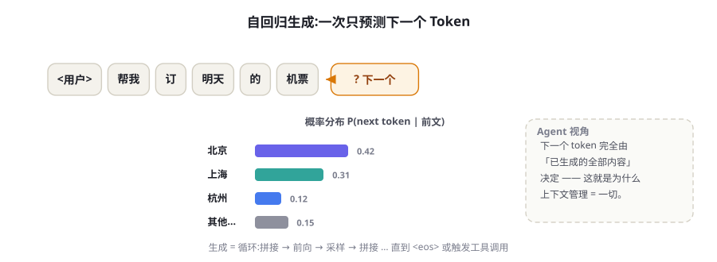
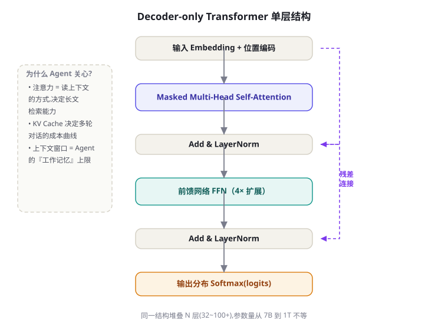
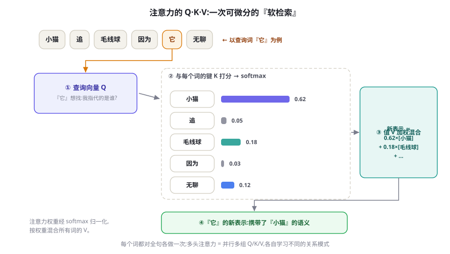
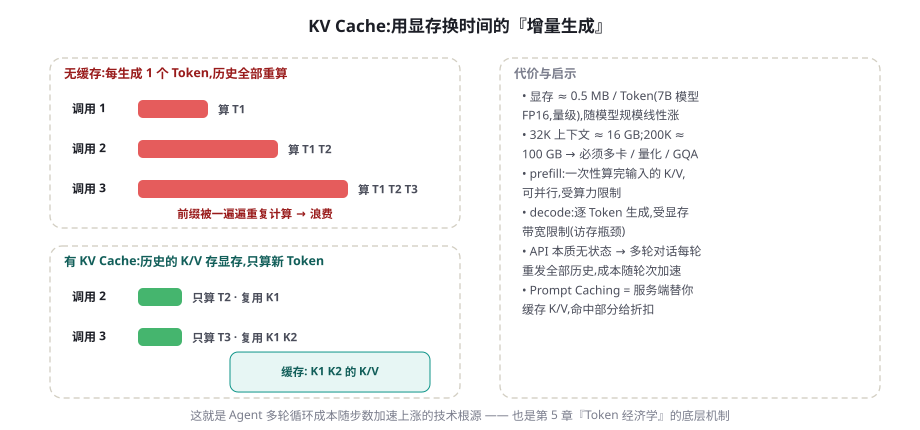

LLM 工作原理速成：Transformer 与注意力机制
你不需要会训练模型，但需要知道它「每一步在算什么」。本章从「预测下一个 Token」这一个任务出发，拆开 Transformer 的三层结构，讲清注意力、自回归生成与 KV Cache 三个机制——它们直接决定了你的 Agent 的能力上限、成本曲线与延迟来源。
一个任务：预测下一个 Token
剥掉所有宣传话术，大语言模型（Large Language Model, LLM）在推理时只做一件事：给定前文，对词表里的每个 Token 输出一个概率。整条流水线是：文本先经分词器切成 Token 序列，每个 Token 变成一个向量（词嵌入，Embedding），加上位置信息后送入几十层 Transformer，最后一步输出整个词表的分数（logits），经 softmax 归一化成概率分布。选中其中一个 Token，拼回前文，再重复整个过程——这就是生成的全部。

训练目标同样朴素：在海量语料上，不断做「遮住下一个词、猜它是什么」的练习。这个目标的副产品是惊人的：为了让预测足够准，模型被迫内化语法、事实、风格乃至推理模式。预测「法国的首都是____」需要事实记忆；预测一段代码的下一行需要理解程序语义；预测数学证明的下一步需要推理。能力不是被「写入」的，而是被预测任务「逼」出来的——这是理解 LLM 一切怪癖的起点：它优化的是「下一个 Token 的似然」，不是「事实正确」或「任务完成」。
context = tokenize("法国的首都是") # 文本 → Token 序列
while True:
logits = model(context) # 前向计算:输出词表上每个 Token 的分数
probs = softmax(logits / temperature) # 温度缩放,决定分布的尖平(第 5 章)
nxt = sample(probs, top_p=0.9) # 按采样策略选出下一个 Token
context.append(nxt) # 拼回上下文
if nxt == EOS or len(context) >= max_tokens:
break # 终止:句末符或长度上限
print(detokenize(context)) # Token 序列 → 文本对 Agent 构建者，这段循环有一个关键推论：模型没有独立的「规划器」或「执行器」。你看到的「决定调用搜索工具」「决定先查 A 再查 B」，本质都是模型在当前上下文条件下生成了一段特殊格式的文本，由你的代码解析后真正执行。第 1 章的 Agent 定义中「LLM 负责决策」，落到实处就是这段循环在不同上下文注入下的行为差异。这也解释了为什么上下文管理是 Agent 工程的第一主题：上下文变了，概率分布就变了，「决策」也就变了。
「下一个 Token 预测」的另一个重要副产品是上下文学习（In-context Learning）：模型不更新参数，仅凭提示中的几个示例就适应新任务。它的机制至今仍有争论，但工程价值确凿——第 6 章的 Few-shot 技术全部建立在这个现象上。
打开黑盒：一层 Transformer 里有什么
2017 年的论文《Attention Is All You Need》提出了 Transformer（Vaswani et al., 2017），此后它成为几乎所有限界模型的骨架。今天的主流 LLM（GPT、Claude、Llama、DeepSeek 等）采用其中的 Decoder-only 结构：把同一个基本层堆叠 N 层（几十层到上百层，参数量从 7B 到万亿量级不等），每层只做三件事：
- 掩码多头自注意力（Masked Multi-Head Self-Attention）：让每个位置的 Token「环顾」它左侧的所有 Token，收集与自己相关的信息。这是层与层之间唯一的跨位置通信渠道，也是模型「读上下文」的方式（下一节展开）。
- 前馈网络（FFN）：对每个位置独立地做一次两层的非线性变换（中间层约扩大到 4 倍维度）。主流假说认为，预训练语料中的世界知识主要存储在 FFN 的权重里——你可以粗略把它当成模型的「参数化笔记本」。
- 残差连接与层归一化（Add & LayerNorm）：每层的输出叠加回输入再归一化。这是让上百层网络仍能稳定训练的标准配置，也意味着信息可以「抄近道」直达高层。

规模感也需要建立：7B 级开源模型通常堆 32 层上下、表示维度数千；百亿到千亿级模型则用到 80~120 层、上万维（均为量级）。Kaplan 等人的 Scaling Laws（2020）与 Chinchilla（Hoffmann et al., 2022, arXiv:2203.15556）系统回答了「给定算力，模型多大、数据多少最划算」——结论简言之是参数与数据量应成比例扩张。这条曲线解释了近年模型能力的可预期爬升；对 Agent 工程师更重要的是它的另一面：权重是固定的，上下文是唯一随每次调用实时变化的输入，所以上下文质量的杠杆常常大于换更大模型的杠杆。
为什么偏偏是 Decoder-only 赢了？三个原因：训练目标简单（序列上每个位置都贡献损失，数据利用率高）；完全可并行（没有 RNN 式的时序依赖，GPU 吃得满）；随规模稳定（越大越强，没有明显的设计瓶颈）。但另外两种变体并未消失，它们仍在 Agent 技术栈的周边位置发挥作用：
| 架构 | 代表模型 | 预训练目标 | 擅长 | 在 Agent 技术栈中的位置 |
|---|---|---|---|---|
| Encoder-only | BERT（Devlin et al., 2019） | 遮词重建（双向） | 文本理解、句向量 | Embedding 模型、检索与重排序（RAG 的地基） |
| Decoder-only | GPT / Claude / Llama / DeepSeek | 下一 Token 预测（单向） | 开放生成、上下文学习、指令遵循 | Agent 的「大脑」，全书主角 |
| Encoder-Decoder | T5（Raffel et al., 2019） | 跨度还原 | 翻译、摘要等序列到序列任务 | 特定子任务（如翻译节点）仍有使用 |
问题：RNN 逐步计算难以并行，长句的信息要「传」很多步才能到位。方法：彻底抛弃循环，用自注意力让任意两个位置一步直连，并支持全序列并行训练。结果：在 WMT14 英德/英法翻译上以更少的训练算力取得当时最优质量；这篇论文的结构成为此后所有大模型的共同起点。
注意力机制：Q、K、V 与一次软检索
注意力初看公式吓人，本质是一个可微分的软检索（Soft Retrieval）。每个 Token 从同一个表示出发，投影出三个角色不同的向量：
- 查询 Q（Query）：「我在找什么」。比如代词「它」发出的查询是「我指代的事物」。
- 键 K（Key）：「我有什么可以被找到」。每个词用自己的键与所有查询做点积——点积越大，两个词越「相关」。
- 值 V（Value）：「匹配上了我给你什么信息」。相关度经 softmax 归一化成权重后，把所有词的值按权重混合，就是该词在这一层的新表示。
写成公式就是 Attention(Q,K,V) = softmax(QKᵀ/√d_k)V。「多头」是把这个过程并行做几十份：每头用自己的一组投影矩阵，有的头学会追踪指代，有的头盯住句法结构，有的头偏好相邻位置——最后把各头的输出拼接融合。

下面这段 20 行的 NumPy 代码实现了带因果掩码的单头注意力，直接跑一遍并打印权重矩阵，是建立直觉最快的办法：
import numpy as np
def softmax(x, axis=-1):
x = x - x.max(axis=axis, keepdims=True) # 数值稳定的 softmax
e = np.exp(x)
return e / e.sum(axis=axis, keepdims=True)
d, n = 8, 5 # 表示维度与序列长度
Q = np.random.randn(n, d) * 0.5 # 查询:每个词「在找什么」
K = np.random.randn(n, d) * 0.5 # 键:每个词「能被怎样找到」
V = np.random.randn(n, d) * 0.5 # 值:匹配后提供的信息
scores = Q @ K.T / np.sqrt(d) # 打分:相似度除以 √d 防止 softmax 饱和
mask = np.triu(np.ones((n, n)), k=1) * -1e9 # 因果掩码:看不到未来的词
attn = softmax(scores + mask) # 每行 = 一个词对全句的注意力分布
out = attn @ V # 按权重混合值向量 → 新表示
print(np.round(attn, 2)) # 打印注意力矩阵,观察「谁在看谁」两个必须记住的工程事实。其一，注意力是「全对全」的：长度为 n 的序列要算 n×n 个相关性，计算量与显存都随序列长度平方增长。这就是长上下文又贵又慢的数学根源；FlashAttention（Dao et al., 2022）等优化让精确注意力显著省显存，但不改变平方级的量级。其二，因果掩码保证每个词只能「看左边」——这是自回归生成正确性的前提，也意味着 Prompt 中越靠后的内容，在计算上可以直接利用的信息越多。
两个独立随机向量的点积，方差随维度 d_k 线性增长。维度一高，点积的绝对值动辄几十上百，softmax 会把几乎全部概率压到一个位置上——分布「锐化」成 one-hot，梯度趋于消失，训练不稳定。除以 √d_k 把点积方差拉回 1 的量级，是让深层注意力可训练的关键一步。采样章节的温度参数（第 5 章）在数学上是同一族操作：都在调 softmax 分布的尖平。
KV Cache：多轮对话不重算历史的秘密
自回归生成有个朴素实现难以忍受的问题：每生成一个 Token，都要对「全部前文」重新做一遍注意力。第 1000 步时，前 999 个 Token 的键和值被重算了 999 遍。观察发现，前文每个 Token 的 K、V 只由它自己的嵌入和位置决定，与新 Token 无关——把它们缓存起来，之后每步只计算新 Token 的 Q/K/V 即可。这就是 KV Cache，几乎所有推理引擎的第一优化。

推理因此分成两个阶段，它们受不同的资源约束，也解释了你账单上的很多现象：
- Prefill（预填充）：处理你发送的整个 Prompt，一次性算出所有位置的 K/V。各位置相互独立、可以大规模并行，受算力限制。你调用 API 后等待「首字延迟」的主要成分就是 Prefill。
- Decode（解码）：逐 Token 生成，每步都要读入全部 KV Cache 做注意力。计算量小但要搬运的数据量大，受显存带宽限制。生成速度（每秒 Token 数）由此封顶，输出越长、等待越久。
这套机制与 Agent 的关系再直接不过：Agent 的每一轮循环都要把全部历史重发给 API——服务端并不会替你默认保留 KV Cache（HTTP 接口本无状态），于是「输入 Token」随对话轮数加速累积。厂商提供的 Prompt Caching（缓存命中部分大幅折扣）之所以可能，正是因为服务端可以把你前缀的 KV Cache 存下来复用。成本的完整算法与省钱手段，我们在第 5 章专门记账。
「模型知道某事」这句口头禅需要小心。知识以统计规律的形式压在 FFN 权重里，不是可列举、可更新的记录：它会过时（训练截止后的事一无所知）、会冲突（不同来源的说法互相覆盖）、会脑补（把高频模式套到冷门实体上，即幻觉）。工程上的对策不是「再问一遍模型」，而是检索接地（RAG）与外部校验——这构成了第 20 章以后的大片江山。
Agent 视角：三个机制，三条设计铁律
读完上面的机制，你可以忘掉大部分公式，但下面三条推论应当成为设计本能——Agent 系统的所有关键决策（提示词怎么写、上下文怎么管、钱花在哪）都建立在其上：
铁律一：上下文即工作记忆，且中段最不可靠。模型「知道」的，只有当前上下文里的内容加上权重中的模糊印象。注意力对开头与结尾的信息更敏感，中段信息的利用率明显偏低——「Lost in the Middle」现象（Liu et al., 2023）在一批长上下文模型上得到系统性验证。因此：关键约束写在系统提示词或最近几轮消息里，不要埋在 50 页检索结果的正中间；上下文窗口再大（32K、200K 到百万级 Token 的量级演进），也要把它当稀缺资源分配，而不是无底洞。
铁律二：工具调用是受约束的文本生成。模型输出的是「函数名 + JSON 参数」的文本，真正执行的是你的代码。这个事实有两面：安全的一面是模型永远无法直接碰你的系统（执行权在你）；脆弱的一面是参数可能错、格式可能崩，所以生产系统必须配结构化输出校验与低温度采样（第 5 章讲参数，第 8 章讲受约束解码的完整工程）。
铁律三：一切输出都是逐 Token 串行。延迟 ≈ 输出 Token 数 × 单 Token 时间。让 Agent「短话短说」（控制输出长度）、把无依赖的子任务并行拆给子 Agent、避免生成成吨的中间叙述，是比换更快的机器更有效的延迟优化。
顺带回答一个常见疑问：上下文窗口是怎么从 4K 扩到百万级的？核心是位置编码的外推技术。主流模型的旋转位置编码 RoPE（Su et al., 2021）原本只在训练长度内有效，直接外推会崩坏；Position Interpolation（Chen et al., 2023, arXiv:2306.15595）把位置坐标线性压缩回训练区间，YaRN（Peng et al., 2023, arXiv:2309.00071）等方案进一步按频率分段处理，再配合少量长文本继续训练，窗口才得以量级式扩展。这也再次印证铁律一：标称窗口 ≠ 有效窗口，扩出来的部分训练分布覆盖更少，可靠性必须实测。
面试和排错都绕不开这三件事：注意力的平方代价、KV Cache 的显存账、自回归的串行延迟。建议做一个 10 分钟的小实验：用 API 分别请求 1K 与 100K Token 的输入，观察首字延迟的变化；再对比输出 100 与 2000 Token 的总耗时。测完你对「上下文经济学」的体感会比读十篇文章都扎实。
到此你已经有了够用的心智模型：LLM 是一台「读入上下文、逐 Token 生成」的概率机器，注意力决定它怎么读，KV Cache 决定它多贵多快，自回归决定它怎么写。下一章我们把三个最容易踩坑的工程变量讲透：Token 怎么计价、上下文窗口怎么算账、采样参数怎么调；再下一章进入本书第一门手艺——提示工程。
Agent 视角的模型版图：能力、成本与上下文的三角
理解了机制，模型选型就不再是「哪个最强用哪个」，而是在三角中做工程权衡：能力（推理与工具调用可靠性）、成本（每 Token 价格 × 任务 Token 量）、上下文与速度（窗口大小、首字延迟、吞吐）。截至 2026 年中的版图可以粗分为四类：
| 类别 | 代表(示例) | 相对成本 | 适合的 Agent 角色 |
|---|---|---|---|
| 旗舰推理模型 | GPT-5 级 / Claude Opus 级 / Gemini Pro 级 / DeepSeek-R1 | 高(10-60×) | 规划者、评审者、困难单步(第 18 章的 Planner) |
| 标准旗舰 | 各家中档旗舰档位 | 中(3-10×) | 主力执行者:工具调用循环的大脑 |
| 轻量小模型 | 各家族 mini/flash/haiku 档 / Qwen 7B 级 | 低(1×) | 高频简单步:分类、抽取、改写、路由(第 78 章级联) |
| 本地开源模型 | Qwen / Llama / DeepSeek 蒸馏版(Ollama/vLLM 部署) | 边际电费 | 隐私敏感、高频、离线场景(第 88 章) |
三个选型纪律。第一，按步骤选型而非按任务选型：同一个 Agent 里，规划步用旗舰、执行步用标准、总结步用小模型，是级联架构（第 78 章）的基本盘——多数团队上线后第一笔省钱优化都来自这里。第二，工具调用可靠性是硬门槛：小模型省下的钱，可能被一次错误参数解析引发的连环失败全部吃掉；选型时先用第 54 章的 BFCL 类基准测一遍候选模型的函数调用准确率。第三，上下文窗口≠可用注意力：宣称 1M Token 的窗口，有效可用范围往往远小于标称（lost-in-the-middle，第 23 章），长上下文能力要看「大海捞针」类评测而非规格表。
最后是本领域的一条元规律：模型的绝对排名每几个月洗一次牌，但「能力-成本-上下文」的权衡结构是稳定的。把你的 Agent 架构做成模型可插拔（第 11 章的统一抽象层），就能始终坐收波动的红利而不被任何一家锁死——这也是第 80 章 LLM 网关存在的理由。
三个高频疑问
Q：需要懂数学才能做 Agent 吗？不需要精通，但需要「功能级」的理解：知道注意力在做加权检索、KV Cache 在空间换时间，你就能解释为什么长上下文又贵又慢、为什么截断历史会失忆。本书所有理论都按这个标准取舍。
Q：MoE（混合专家）架构会改变什么？对使用者而言，MoE 的意义是「同等推理成本下更高的有效容量」——DeepSeek-V3、Qwen3 等开源旗舰均为 MoE。工程上的影响主要在部署侧（显存总量要求高、但单 token 计算量低），应用层几乎无感。
Q：要不要追新模型？用「能力-成本-上下文」三角（见上节）做季度级评估即可；周级追新只会消耗注意力。真正稳定的投资是你的提示词资产、评测集与工具抽象——它们跨模型可用。
本章小结
- LLM 推理时只做一件事：给定前文，输出词表上每个 Token 的概率；训练目标是海量语料上的下一 Token 预测，能力是这个朴素目标的副产品。
- 主流 LLM 是 Decoder-only Transformer 的堆叠：自注意力负责跨位置通信，FFN 存储知识的主流假说成立，残差与归一化保证深层可训练。
- 注意力 = 可微分的软检索：Q 找相关、K 被匹配、V 出信息；计算量随序列长度平方增长，这是长上下文又贵又慢的根源。
- KV Cache 把历史 K/V 存下来做增量生成，推理分为受算力限制的 Prefill 与受带宽限制的 Decode 两阶段；它也是 Prompt Caching 与多轮对话成本曲线的技术根源。
- 三条 Agent 设计铁律：上下文即工作记忆且中段最弱（关键信息放首尾）、工具调用是文本生成（执行权与校验都在你）、输出逐 Token 串行（延迟与输出长度成正比）。
自测题
- 为什么说「Agent 决定调用工具」本质仍是下一 Token 预测？这个说法对系统设计有什么含义？（提示：决策 = 某种上下文条件下概率最高的生成结果，那么控制什么就能控制决策？）
- KV Cache 缓存的是什么？为什么只缓存 K 和 V 就够了，不需要缓存 Q？（提示：K/V 由谁决定？每步新算的只有谁？）
- 上下文窗口已经扩到百万级 Token，为什么「把关键信息埋在 50 页资料正中间」仍然不可靠？（提示：Lost in the Middle 与注意力的利用方式。）
- Prefill 与 Decode 分别受什么资源限制？这如何解释 API 按输入/输出分别计价、且输出更贵？（提示：并行性与显存带宽。）
- 对照表 4-1：为什么 Agent 的「大脑」清一色选 Decoder-only，而 RAG 检索环节常配 Encoder-only 模型？
参考文献与延伸阅读
- Vaswani, A. et al. (2017). Attention Is All You Need. NeurIPS 2017. arXiv:1706.03762
- Brown, T. et al. (2020). Language Models are Few-Shot Learners. NeurIPS 2020. arXiv:2005.14165
- Devlin, J. et al. (2019). BERT: Pre-training of Deep Bidirectional Transformers for Language Understanding. NAACL 2019. arXiv:1810.04805
- Su, J. et al. (2021). RoFormer: Enhanced Transformer with Rotary Position Embedding. arXiv:2104.09864
- Kaplan, J. et al. (2020). Scaling Laws for Neural Language Models. arXiv:2001.08361
- Dao, T. et al. (2022). FlashAttention: Fast and Memory-Efficient Exact Attention with IO-Awareness. arXiv:2205.14135
- Kwon, W. et al. (2023). Efficient Memory Management for Large Language Model Serving with PagedAttention. SOSP 2023. arXiv:2309.06180
- Liu, N. F. et al. (2023). Lost in the Middle: How Language Models Use Long Contexts. TACL 2024. arXiv:2307.03172